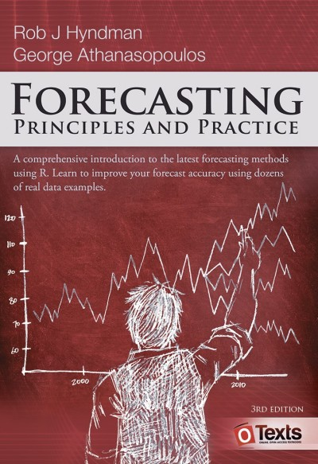

| Monday 14:15-16:00 | Thursday 12:15-14:00 |
|---|---|
| 16.01.2023 | 19.01.2023 |
| Introduction lecture | R recap |
| 23.01.2023 | 26.01.2023 |
| Time series graphics | Time series decomposition (summary) |
| 30.01.2023 | 02.02.2023 |
| Forecasters toolbox | Forecasters toolbox |
| 06.02.2023 | 09.02.2023 |
| Regression models | Regression models |
| 13.02.2023 | 16.02.2023 |
| Exponential smoothing | Exponential smoothing |
| 20.02.2023 | 23.02.2023 |
| No lecture: Selfstudy time series features (website) | No lecture: Selfstudy judgmental forecasts (website) |
| 27.02.2023 | 02.03.2023 |
| ARIMA | ARIMA |
| 06.03.2023 | 09.03.2023 |
| ARIMA | No lecture / selfstudy |
| 13.03.2023 | 16.03.2023 |
| ARIMA | Dynamic regresion models |
| 20.03.2023 | 23.03.2023 |
| Dynamic regression models | No lecture / selfstudy |
| 27.03.2023 | 30.03.2023 |
| Volatility forecasting | Volatility forecasting |
| 03.04.2023 | 06.04.2023 |
| Easter holiday? | Easter holiday |
| 10.04.2023 | 13.04.2023 |
| Easter holiday | Summary lecture |
| Study period prior to exam | |
| 08.05.2023 | |
| 8 hour home exam |
Introduction
Welcome to the website for BAN430 Forecasting. We will use this website as a supplement to lectures. The website is an ongoing development, so not all subjects will have content yet. Below you will find a detailed (preliminary) lecture plan, link to the textbook and curriculum.
Lecture plan
Literature

We will use the textbook Forecasting: Principles and Practice, 3rd edition, by Hyndman and Athanasopoulos, i.e. the online version which can be accessed at https://otexts.com/fpp3/.
Curriculum
Textbook Hyndman and Athanasopoulos(2021) chapters 1-10 and 13. Additional notes by lecturer on volatility forecasting. All the material on this website.